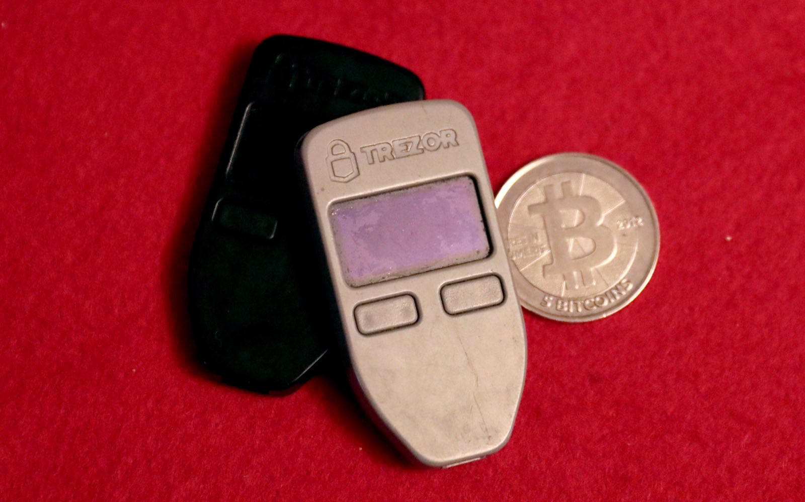
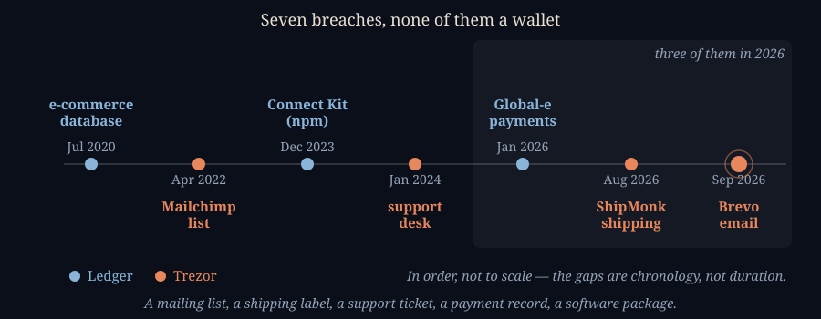
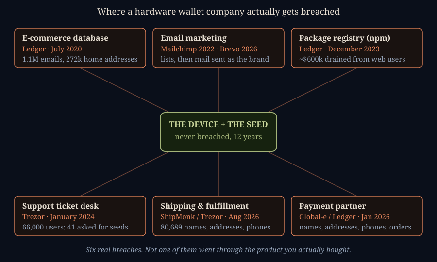

The Phishing Email Really Was From Trezor
SEPTEMBER 10, 2026

The email went out on September 9th to somewhere around 347,000 people. Subject line: "Critical Security Alert: STM32 Entropy Vulnerability." It warned that the microcontroller inside their hardware wallet had a flaw in the way it generated randomness, that their recovery seed might therefore be weak enough to guess, and that they should go to a verification tool and check. The tool asked for the twenty-four words. Whoever typed them in handed over everything.
That is an ordinary crypto phishing email in every respect but one. It came
from help@trezor.io — Trezor's own real address, on Trezor's own
real domain. Not trezor-support.net. Not a lookalike with a Cyrillic character
buried in it. The actual domain. It passed SPF. It passed DKIM. Every automated check your mail
provider runs before deciding whether a message is really from who it says it's from came back
clean, because on the day it was sent, the message genuinely was authorized to speak as
Trezor. Every piece of advice any of us have ever given about spotting a phishing email — check
the sender, hover the link, look for the misspelled domain — would have told you this one was
fine.
How a Stranger Got to Speak as Trezor
The answer is a company most Trezor customers have never heard of. Brevo — the
email marketing platform formerly called Sendinblue — is who Trezor pays to send its newsletter.
That is an entirely ordinary arrangement; almost every company you buy anything from uses a service
like it. To make those newsletters land in inboxes rather than spam folders, Trezor had to publish a
record in its own DNS naming Brevo's mail servers as authorized to send on behalf of
trezor.io. That record is what makes the legitimate newsletter work. It is also,
precisely, what made the phishing email work.
An attacker got into Brevo. Brevo says 120 of its customer accounts were accessed and that it closed the unauthorized access at 11:30 CEST on September 10th. How the attacker got in has not been stated publicly — stolen API credentials, a compromised staff account, a flaw in Brevo's own systems; nobody outside has said, and I'm not going to guess. What's clear is what it bought them: the ability to compose a message inside Trezor's account and push it down a pipe the whole internet had already been told to trust.
Trezor was not the only one. BitBox and CoinTracking got the same treatment the same day, and Peach Bitcoin and Blocktrainer both warned their own users. This wasn't an attack on Trezor that happened to use Brevo. It was an attack on Brevo that happened to catch Trezor in it, along with everyone else in the building.
To Trezor's credit, the response was fast. They killed their Brevo account and, in
their own account of it,
"took down the domain at the DNS level within 20 minutes, preventing the link from working" —
limiting the damage to the roughly 2,500 people who had already clicked. That
sentence is worth reading twice, because "we took the domain down at the DNS level" is not something
you can do to somebody else's domain. You can only do it to your own. The strong implication is that
the link in the email pointed at a subdomain of trezor.io — the kind that email platforms
routinely have customers set up so that click-tracking links carry the brand's name rather than the
platform's. Trezor hasn't spelled that out and I can't prove it, but it fits both facts we do have:
why the link looked like Trezor's, and why Trezor could switch it off by itself in twenty minutes.
The convenience that makes marketing links look trustworthy is the same convenience that made this
one lethal.
The Lie Was Built Out of Two True Stories
Here is the part I find genuinely unsettling, and it's not the mail plumbing. Whoever wrote that email had done their reading.
"STM32 entropy vulnerability" is not a phrase somebody generated at random. It is two real things welded together.
The first is the Coldcard disaster I wrote about five weeks ago — a firmware bug that quietly disabled the hardware randomness check on a competitor's wallet, so seeds that should have carried 128 bits of entropy carried as few as 40. That story was everywhere in August. It is exactly the shape of thing the phishing email described: a chip that was supposed to produce real randomness, silently not doing it, seeds guessable as a result. Anyone who had followed that news had a ready-made slot in their head for this message to drop into.
The second is closer to home. Trezor's older devices — the Model One and the Model T — really did run on STM32 microcontrollers, and really did have a known, documented weakness in them. In February 2020, Kraken's security team published a method for pulling the encrypted seed straight off an STM32F205 or STM32F427 by desoldering the chip and glitching its supply voltage at exactly the right instant during boot, then brute-forcing the PIN. Fifteen minutes with the device in hand. Several hundred dollars of equipment at the time, which they estimated could be built for about seventy-five. And because it exploited the microcontroller itself rather than Trezor's code, it was not fixable by a firmware update.
So: real chip, real named vulnerability class, real history, real recent entropy scandal at a rival. Wrong on the one thing that mattered. The 2020 attack needs your device physically in someone's hands; it is not a flaw in how seeds are generated, and a passphrase defeats it outright. But if you half-remembered "there was something about Trezor and those STM32 chips" — and a reasonably attentive Bitcoiner might — the email read as the other shoe finally dropping. That's not a lucky guess. That is someone who knew the audience they'd just been handed.
Twelve Years of Getting the Hard Part Right
It's worth saying plainly who Trezor actually is, because the temptation right now is to write them off as amateurs, and that isn't what the record says.
SatoshiLabs was founded in Prague, and on July 29, 2014 it shipped the Trezor Model One — the first commercially available hardware wallet that ever existed. Marek Palatinus and Pavol Rusnák built it around an idea nobody had productized yet: keep the private key on a small device that never touches the internet, and sign transactions there instead. If you have ever written twelve or twenty-four words on a card and put it in a safe, you are using their work. Both men are co-authors of the recovery-seed standard and the optional passphrase that sits on top of it — written up as open proposals, given away rather than licensed. Essentially every wallet made since, including the ones that compete with Trezor, is built on them.
The lineup has moved on. The Model One and Model T were both pulled from Trezor's own store in January 2026. What they sell now — the Safe 3, Safe 5 and Safe 7 — all use certified secure elements, which the old STM32 models did not have, and which exist specifically to close the class of physical attack Kraken demonstrated. The Safe 7 goes further and uses TROPIC01, a secure chip designed to be openly auditable, built by a SatoshiLabs sister company. That is a company responding to a published attack on its hardware by redesigning the hardware, over several years, in public.
And the claim they keep making is, as far as I can find, true. In their statement about the shipping breach last month, Trezor put it this way: "What has not happened, in 12 years, is a Trezor device or Trezor Suite exposing anyone's keys or funds. That is the part we control end to end, and it is the part that decides whether your BTC is safe." I went looking for a counterexample. There isn't one. Every Trezor incident on the record is a breach of something around the device.
Three Incidents in One Year, and None of Them the Wallet

This is Trezor's second breach in a month and its third of 2026, and the one before this is, I'd argue, considerably worse than the email.
On August 13th Trezor disclosed that ShipMonk, the company that packs and ships its orders, had been broken into — reportedly through a zero-day SQL injection flaw in a piece of business software ShipMonk ran. The first count was 13,689 customers: names, home addresses, email addresses, phone numbers. Then it grew. Another roughly 67,000 American customers turned up in the stolen data, bringing the total past 80,000 — and those extra records were orders placed between November 2019 and August 2021.
Sit with that date range. Trezor's own policy is to delete or anonymize customer order data after 90 days, which is a genuinely good policy, and by Trezor's account ShipMonk was contractually required to do the same and simply hadn't. So somebody who bought a Trezor in 2019, whose data Trezor had correctly disposed of years ago, had their home address stolen in 2026 by a vendor that was supposed to have deleted it five years earlier. You cannot audit that from outside. You cannot opt out of it. And unlike an email address, you cannot rotate your house.
The rest of the record, briefly. April 2022: an insider at Mailchimp exported audience
lists from around a hundred crypto companies, Trezor among them; owners then got a convincing email from a
fake trezor.us domain pushing a poisoned Trezor Suite installer that harvested seeds. January
2024: Trezor's third-party support ticketing portal was compromised, exposing names,
usernames and email addresses for about 66,000 people — and the intruder emailed 41 of them
directly, in person, asking for their recovery seeds.
Four incidents, four vendors, zero devices.
Ledger Is Not the Escape Hatch
The obvious next question — the one I'd ask — is whether the answer is simply to buy the other one. Ledger, the French company (not this notebook), is the natural comparison: founded around the same era, comparable size, the other name everybody knows. So I went and read their record too, and it is not better. On this particular axis it is meaningfully worse.

In July 2020, Ledger's e-commerce and marketing database was breached: roughly 1.1 million email addresses, and 272,000 records carrying full names, phone numbers and home addresses. That data was then dumped publicly in December of that year, which is the difference between a breach and a catastrophe — it stopped being one attacker's asset and became everyone's. What followed was not just phishing. Ledger customers received extortion demands for $700 to $1,000 in Bitcoin, with threats of being doxxed or physically visited if they didn't pay. Six years on, that list is still circulating.
Then in December 2023, Ledger managed something Trezor hasn't: a breach that actually moved customer money. An attacker phished a former Ledger employee, used a stolen session token to get past two-factor authentication into that person's npm account, and published three poisoned versions of Ledger's Connect Kit — a software component that hundreds of crypto websites load directly from the internet. For a few hours, visiting an unrelated website that happened to use it could drain your wallet. Roughly $600,000 went, by Ledger's own account, in a window of under two hours. Note that this still wasn't the hardware. It was a supply chain, which is the same failure as all the others wearing a different hat.
And in January 2026, Ledger disclosed that Global-e, its e-commerce payment partner, had been breached — names, shipping addresses, emails, phone numbers, order details. Eight months before ShipMonk did the same thing to Trezor.
What I Actually Think Is Going On
You cannot buy your way out of this by changing brands, and that's the uncomfortable finding here.
These companies sell a product whose entire promise is no third parties. That promise is about your keys, and on that narrow question they have both delivered for over a decade. But no company is only its product. It also has to take payments, ship boxes, answer tickets and send email — and every one of those is a third party, chosen for price and convenience, holding a list whose defining characteristic is that everyone on it is known to own a hardware wallet. Nobody threat-models their shipping vendor. And the value of that list has nothing to do with how good the device is. A perfectly secure wallet sold to a customer whose home address leaks is a perfectly secure wallet in a house somebody now knows to visit.
So I'd separate two judgments that keep getting mashed together. Is the Trezor device sound? The evidence says yes, and better than it was — twelve years, no keys lost to a device or to Suite, an acknowledged hardware weakness answered with new hardware. Is Trezor a careful custodian of the data you must hand over to buy one? Three vendor incidents in a single year, including one where the vendor sat on data it was contractually obliged to destroy, is a real and fair ding. Those are different questions, and only the second one is going badly. Trezor says it is "reviewing our vendor relationships and security requirements in light of this incident." That's the right sentence. It is also the sentence every company says, and the ShipMonk failure was a contract that already existed and wasn't enforced — so what I'd want to see is not a review, but an audit somebody outside can check.
Why Bitkey Keeps Coming Out of These Stories Well
I've written before about why I split my own keys rather than trusting any one device, and I own a Bitkey, so take the following with that bias fully declared. But there is a structural point here that isn't a matter of taste.
The phishing email asked for a recovery phrase. A Bitkey doesn't have one. It's a two-of-three arrangement — a key on your phone, a key on the hardware, a key on Block's server, any two of which can spend and no one of which can act alone — and recovery runs through that arrangement rather than through twelve words on a card. There is no secret a user could be tricked into typing, because there is no secret of that kind at all. That is not marketing; it's a consequence of the design. The single most effective phishing lure in this industry, the one that has drained more wallets than every firmware bug combined, simply has nothing to ask a Bitkey owner for.
Which is not the same as saying Bitkey is safe from this. Block has a customer list and a mailing list too, and a stolen one would be worth exactly as much to somebody willing to write "your Bitkey needs attention, install this." Seedless removes one specific attack, not the category.
The reason I'd still call their conduct professional is narrower and more checkable. On August 1st this year, an outside researcher reported that Bitkey's app had been generating the secret used when you enroll an inheritance beneficiary or a recovery contact with an ordinary random-number generator instead of a cryptographic one. Block published it — what the bug was, who found it, who was exposed, that they had no evidence anyone was harmed, and, pointedly, that it did not mean wallet keys were generated with weak entropy, which is exactly the thing everyone was primed to fear that week. Then they shipped the fix. That is the same instinct I gave Alby credit for the other day: stating the bad news plainly, in your own words, before anyone forces you to. It's not proof of a perfect company. It's evidence of an engineering culture rather than a marketing one, which is about the most you can actually verify from outside — and it's the same standard I'm holding Trezor to above, where the device passes and the vendor management doesn't.
What to do about this, in order.
1. If you typed your recovery words into anything, treat those coins as gone and move now. Not later, not after you change the PIN — a PIN change does nothing once the seed is out. Generate a brand new wallet with a new seed on a device you trust and send everything to it. This is the only step here that is genuinely urgent.
2. If you only clicked the link, you're almost certainly fine. Clicking is not entering. Around 2,500 people reached that page; the ones with a problem are the much smaller number who filled the form in. Don't panic-move funds you don't need to move.
3. Assume your email address is now on a list, permanently. The rule that survives all of this is short: no legitimate wallet company will ever ask for your recovery phrase — not to verify it, not to check it, not to migrate it, not ever. Any message that does is an attack, full stop, regardless of what domain it came from. This one came from the real one.
4. Never navigate from the email. Type the address in yourself, or use a bookmark you made on a calm day. That habit is what beat this attack, because it was the only defence that didn't depend on the sender being fake.
5. If you bought a Trezor directly, expect phone calls and physical mail too. The ShipMonk data includes home addresses and phone numbers, some of it from orders placed back in 2019. Voice calls impersonating support are already being reported. Nobody legitimate calls you about your wallet.
6. Turn on a passphrase. This is the one that changes the math instead of your habits. On a Trezor, a passphrase creates a hidden wallet that the twenty-four words alone cannot open — so a stolen seed is worth nothing without it, and it also defeats the physical STM32 attack the phishing email was impersonating. Write it down somewhere separate from the seed and understand that losing it loses the coins; it is a real trade-off, not free.
7. Don't switch to Ledger expecting this to stop. Their record on exactly this failure is longer and includes a publicly dumped list of 272,000 home addresses that criminals are still working. If you're moving, move for a reason that addresses the actual problem — fewer secrets that can be phished out of you, or keys split so that no single mistake is fatal.
What stays with me is how little of this was about cryptography. Nobody broke a chip, guessed a seed, or found a flaw in twelve years of code that has held up remarkably well. Somebody logged into a marketing tool. The whole apparatus of self-custody — the secure elements, the audited firmware, the open standards, the steel plates in safes — sat there working perfectly while the attack walked around all of it and knocked on the front door using the company's own name, because the company had told the world's mail servers, in writing, to open it.